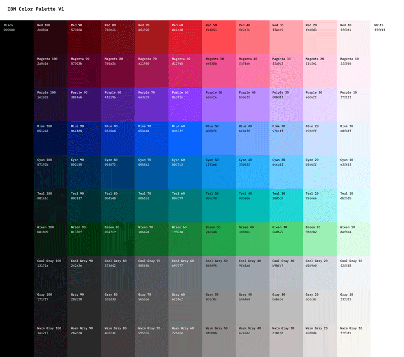

Безопасная палитра
Безопасные веб-цвета
Вашему вниманию предлагается палитра цветов, рекомендуемых для экранного дизайна. Безопасные цвета всегда
неизменны при переходе от одного браузера к другому, от одного монитора к другому, или от одной платформы к
другой, с их различными разрешениями и возможностями цветопередачи.
Если веб-браузер не в состоянии правильно отобразить тот или иной цвет, то он пытается подобрать похожий или
смешивает несколько соседних цветов. Может так случиться, что исходный цвет будет замещён чем-то совершенно
неподходящим.
Сегодня уже весьма спорна целесообразность использования безопасной палитры, однако используя её, вы будете
уверены, что цвета будут выглядеть неизменно хорошо и без искажений даже на очень старых компьютерах, вплоть до
8-битного режима отображения с поддержкой всего 256 цветов.
Безопасные цвета были выведены математически, а не потому, что они кому-то больше пришлись по душе. Для
получения безопасного цвета из Красного, Зелёного и Синего, нужно использовать только данные десятичные
значения: 0, 51, 102, 153, 204, 255 — и никакие другие. Каждое из трёх шестнадцатеричных значений не должно
отличаться от 00, 33, 66, 99, CC, FF.

Таблица безопасных веб-цветов
Палитра состоит из 216 безопасных веб-цветов. Под каждым цветом указаны два значения — RGB, для создания цвета в
графическом редакторе, и его шестнадцатеричных HEX-код, для обозначения цвета в HTML.
С палитрой можно ознакомиться
на сайте специализированных изданий.
Соображения по выбору цветов
- Если любое из трех шестнадцатеричных значений отличается от 00, 33, 66, 99, СС или FF, то цвет не является
безопасным.
Пример: HEX = (99, FF, 10)
Для создания любого из 216 безопасных цветов в Red, Green и Blue можно использовать только десятичные значения:
0, 51, 102, 153, 204, 255 - и никакие другие.
- Безопасные цвета предполагают шесть возможных значений насыщенности для каждой из составляющих красного,
зеленого и синего цветов. Этими значениями являются: 0%, 20%, 40%, 60%, 80% и 100%. Значение 0,0,0 должно быть
эквивалентно черному цвету. Значение 100,100,100 должно отображать чисто белый цвет. Значение 100,0,0 чисто
красный и т.д.
Другими словами, безопасные цвета - цвета, для которых насыщенность составляющих соответствует безопасным
значениям.
Задание безопасного цвета заключается в выборе комбинации из безопасных шестнадцатеричных значений.
- Системы управления цветом обычно резервируют, по крайней мере, 40 цветов для системного программного обеспечения
компьютера. Если вычесть 40 цветов из 256-цветной палитры, или 8-разрядной системы, то для приложений типа
веб-браузеров остается только 216 цветов. Таким образом, 216 - это точное число цветов, с которыми должны
работать веб-дизайнеры. В данной палитре содержится избыточное число синих и зеленых тонов и недостаточное
количество красных.
- В веб-дизайне наиболее популярны форматы GIF и JPEG.
Формат GIF первоначально был изобретен для использования в CompuServe, одной из первых коммерческих
интерактивных сетей. Так как он разрабатывался для использования в компьютерной сети с низкими скоростями
передачи данных, то GIF оказался идеальным форматом для использования в Интернете и стал первым графическим
форматом, поддерживаемом в компьютерной сети.
- Смысл сжатия состоит в замене ряда одинаковых символов одним, умноженным на число повторений.
Формат GIF ограничен 256-цветной палитрой. Это означает, что, независимо от того, сколько цветов содержит файл,
после преобразования в формат GIF в нем останется 256 цветов или меньше. Причина этого ограничения состоит в
том, что стандарт GIF разрабатывался для низких скоростей сетевых соединений. Так как каждый цвет, включенный в
графический файл, представляет собой дополнительные данные, меньшее количество цветов означает меньшие размеры
файла и более короткое время загрузки. Например, если 10 красных пикселей стоят в графическом файле рядом, то в
формате файла без сжатия 10 красных пикселей будут представлены как 10 символов. GIF же в этом случае использует
только два символа: число повторений цвета и сам цвет. Вместо 10 элементов данных получается только два.
- Другие интересные возможности GIF - чересстрочная развертка и возможность создания анимированных изображений.
Обе эти возможности очень широко применяются в создании веб-страниц.
- JPEG сжимает изображение, сохраняя его полную черно-белую версию и большую часть цветовой информации. Так как
сохраняется не вся цветовая информация, формат JPEG называется форматом с потерями. Более удобен для работы с
графикой. В отличие от GIF, JPEG не позволяет включать в файл больше одного изображения.
- Человеческий глаз не одинаково воспринимает различные цвета. Существует понятие спектральная чувствительность
глаза. Оптимальными для глаз синий, зеленый и желтые цвета и их оттенки.
Когда используют безопасные цвета?
Если Ваш веб-сайт имеет цветной фон, то лучше использовать безопасные цвета.
Это гарантирует Вам вид, который Вы ожидаете, на любой платформе. Не стоит забывать о том, что до сих пор
активно используются старые компьютеры, и поэтому необходимо помнить об особенностях отображения на них.
Таким образом, используя безопасную цветовую палитру Вы гарантируете, что получите на веб-странице тот цвет,
который для этого задуман.